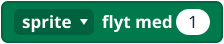
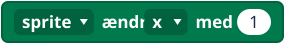
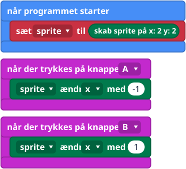
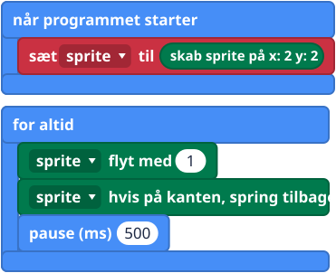
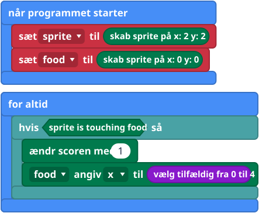

Hvad er det?
En sprite er en figur på lysene: ét lys, som du kan flytte rundt med. Den har en plads, der skrives (x, y) ligesom på LED-gitteret, og den kan flytte sig, dreje og støde ind i ting. x tæller fra 0 til 4 fra venstre mod højre, og y tæller fra 0 til 4 oppefra og ned. En ny sprite kigger mod højre.
Det er sådan, man laver spil på micro:bit'en. Sprite-blokkene ligger i gruppen Spil (Game).
Blokkene



Små eksempler



Prøv det her
- Flyt spriten til venstre og højre med A og B.
- Få den til at springe frem og tilbage hen over lysene.
- Tilføj en sprite mere, der hedder food, på en tilfældig plads, og få et point, når du rører den.
- Sværere: slut spillet med game over, når scoren når 10.
Typiske fejl
- Spriten flytter sig ikke. Tjek, hvilke blokke der ligger inde i hvilke hændelser. En for altid-løkke (forever) skal have en pause, så du kan se den flytte sig.
- De rører aldrig hinanden. Begge sprites skal findes, og de skal være på det samme lys.
- Min sprite forsvandt. Brug ikke vis-blokke (show), mens et spil kører, for de slås om lysene. Brug i stedet ændr scoren med og game over.
- Den viser den forkerte sprite. En ny sprite, der bliver gemt i den samme variabel, erstatter den gamle.
Koden skrevet som tekst
JavaScript: let sprite = game.createSprite(2, 2)
sprite.change(LedSpriteProperty.X, 1)
sprite.move(1)
sprite.ifOnEdgeBounce()
game.addScore(1)
Python: sprite = game.create_sprite(2, 2)
sprite.change(LedSpriteProperty.X, 1)
sprite.move(1)
sprite.if_on_edge_bounce()
game.add_score(1)
V1 og V2
Det samme på begge.
Lærernoter
- Tid: 40 til 60 minutter.
- Det lærer de: objekter, der har en plads og kan gøre ting, koordinater, kollision og score.
- Typisk misforståelse: variablen indeholder spriten, ikke et tal.
- Billederne af blokkene er forenklede tegninger. Tjek de rigtige blokke i MakeCode.